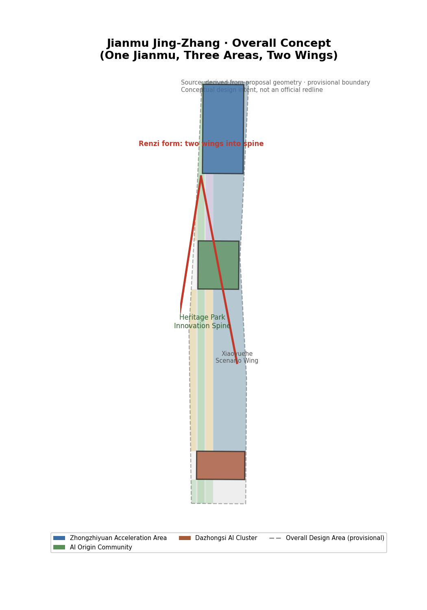
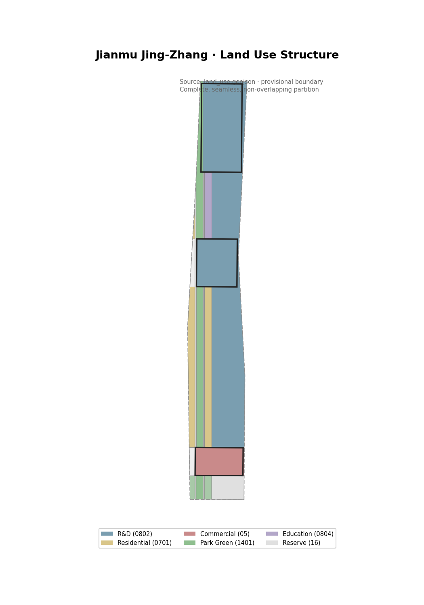
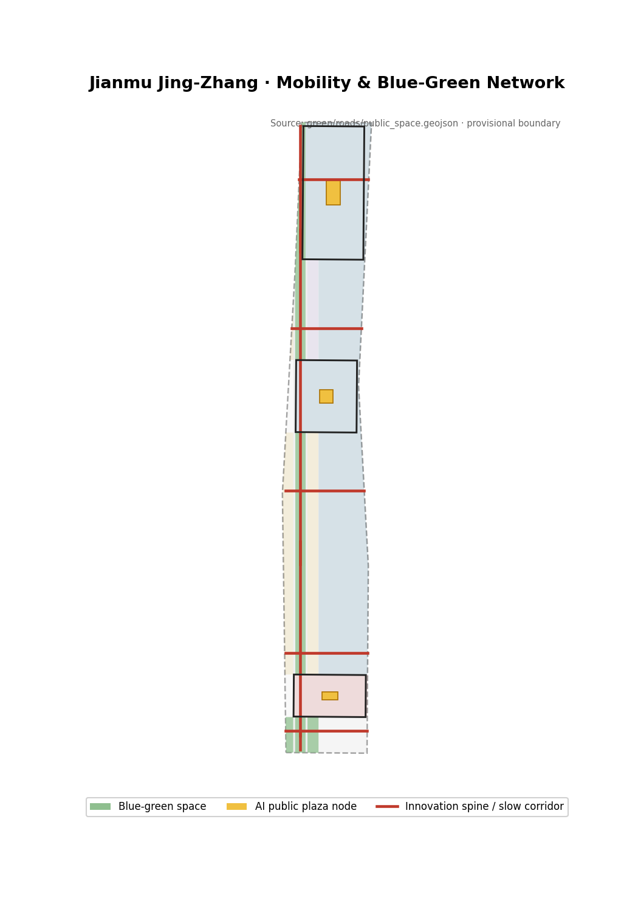
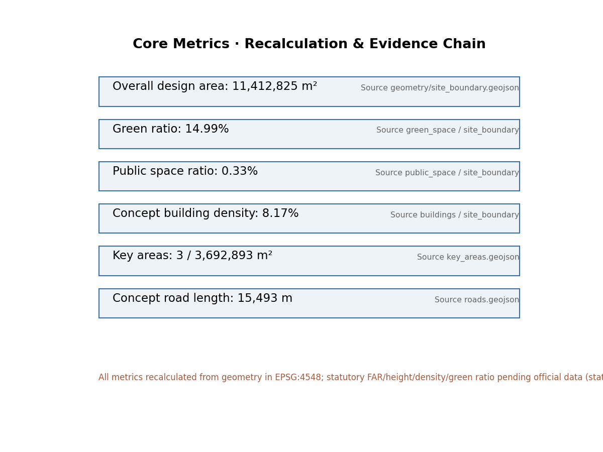

Overview Map
Overall concept: the Jing-Zhang Heritage Park as the innovation backbone (One Meridian), Zhongzhiyuan, AI Origin Community, and Dazhongsi along the spine (Three Areas), with the Zhongguancun and Xiaoyuehe wings converging into the spine (Two Wings) — "from the renzi railway to the Jianmu heavenly ladder," carrying self-reliant innovation throughout.

Core Metrics (recalculated from geometry in EPSG:4548)
Overall design area
Green area / ratio
Public space area / ratio
Concept building footprint / density
Key areas
Concept road length
Floor area ratio (statutory)
Building height (statutory)
Three-Level Scope Framework
| Scope | Area | Depth | Outputs |
|---|---|---|---|
| Coordinated research area | ≈43.6 km² | Industry & future-city research | Three positionings, five functions, three-areas-two-wings loop, global cases |
| Overall design area | ≈11.4 km² | Urban design under regulatory-plan framework | Land use / buildings / roads / green / public / phasing layers; geometry & metrics layer |
| Key detailed area | ≈368.4 ha | Detailed design of three key areas | Positioning + structure + renewal + mobility + public space + scenarios + risks |
Overall Concept: Jianmu Jing-Zhang
The name "Jianmu" comes from the Classic of Mountains and Seas (Shanhaijing, Hainei Nanjing) — the world-tree connecting heaven and earth, the heavenly ladder by which the many lords ascended and descended. The Jing-Zhang Railway (1905–1909), China's first trunk line surveyed, designed, and built by the Chinese themselves, crossed the Badaling heights with Zhan Tianyou's "renzi (人)" zigzag — itself a "ladder over the mountains." A century later, this same land becomes a new ladder toward an intelligent future.
Three reasons: Ladder railway heritage → AI ladder; Passage wisdom ascends and descends through Jing-Zhang; Self-reliance from self-reliant railway to self-reliant compute/model/data/ecosystem.
Symbol system "from the renzi railway to the Jianmu heavenly ladder": renzi = historical root (Zhan Tianyou's self-reliant innovation), Jianmu = ladder to the future; spatial structure = renzi + Jianmu (two wings as branches into the spine, spine as trunk linking three areas); renzi road topology, Renzi Plaza, buildings along renzi fabric.
Naming system: Trunk — Branch — Canopy
Trunkinnovation spine (Heritage Park)Branchareas and districtsCanopycommunity AI scenario stations (Zhiyi)
Logo direction
The Jianmu world-tree: roots embedded with the renzi form (historical self-reliance), trunk reaching to heaven (ladder to the future), branches spreading to both wings; colors: Jing-Zhang railway green, intelligent blue, limestone.
Key Areas: Three Areas, Two Wings — Synergy Loop and Functional Permeation
Zhongzhiyuan Acceleration Area (192.1 ha)
Autonomy Engine: full-stack compute, model, data, application; Compute Plaza and industry test/validation scenarios.
AI Origin Community (104.3 ha)
Innovation Source: talent, startups, open-source; Renzi Plaza, open-source lab, transit-oriented development.
Dazhongsi Cluster (72.0 ha)
Scenario Market: AI+consumption, commerce, scenario experience; AI Market Plaza.
Three flows of functional permeation: talent flow (Origin startups → Dazhongsi scenarios → open-source back to Origin), factor flow (Zhongguancun wing capital/IP into three areas), open-source flow (code/model/data across areas). Loop: Source → Engine → Market → back to Source.
Zhongguancun Service Wing (west)
Global factor allocation, IP and capital empowerment, "service artery".
Xiaoyuehe Scenario Wing (east)
AI+life experience, scenario opening, "living showcase".

Land Use Structure
Land use is recalculated from geometry in EPSG:4548, complete with no gaps or overlaps, covering industry, residential, public services, roads, and blue-green space across ten categories. Buildings follow a retain-renovate-new-build strategy: heritage and intact fabric retained, low-efficiency buildings renovated into innovation space, and new AI-industry increments in the key areas (conceptual; statutory FAR and height pending official data).

| Code | Name | Area (ha) | Meaning |
|---|---|---|---|
| 0802 | R&D | 693.6 | Core AI industry function |
| 0701 | Residential | 119.7 | Talent liveability |
| 1401+1402 | Park/Green buffer | 131.1 | Blue-green, green ratio 11.5% |
| 05 | Commercial services | 75.1 | Native intelligent business |
| 0804/05/06 | Education/Sports/Health | 43.4 | Public service facilities |
| 1207 | Urban road land | 37.0 | Spine companion & district roads |
| 16 | Reserve | 41.4 | Flexible future function |
Mobility & Blue-Green Public Space
The north-south innovation spine carries continuous slow corridors; east-west branches connect the three areas and wings; transit-oriented hub (Zhiyi commuter hub); a "one spine, many pearls" blue-green network with three AI public plaza nodes (AI Market Plaza, Renzi Plaza, Compute Plaza).

AI Scenario Cards (10, incl. 3 industry test/validation)
Ten cards in three groups: Jing-Zhang-specific (impossible without this belt's railway/heritage/open-source), industry test & validation (highest AI concentration), ethical-boundary demonstration (showing "human final judgment"; medical/legal/qualification conclusions to human review).
| ID | Scenario | Location | Users | Privacy / human-review boundary |
|---|---|---|---|---|
| SC-01 | Zhiyi Commuter Hub (transit AI interchange) | AI Origin rail station | Commuters | Anonymous flow data only; human service fallback |
| SC-02 | Zhiyi Community School (AI+education) | Origin living circle | Students, parents | Minors' data minimized; teacher review |
| SC-03 | Zhiyi Health Cabin (AI screening) | Community station | Residents | Medical conclusions to human; not a diagnosis |
| SC-04 | Zhiyi Legal Consult (AI+law) | Community station | Residents, founders | Qualification/IP/legal conclusions to human |
| SC-05 | Heritage Park AI Guide (AI+culture) | Jing-Zhang Heritage Park | Visitors | Public history only; human-reviewed content |
| SC-06 | Test: Autonomous Shuttle (validation 1) | Zhongzhiyuan-Xiaoyuehe loop | Test firms, riders | Controlled roads; safety officers; compliant data |
| SC-07 | Test: Low-altitude Logistics (validation 2) | Zhongzhiyuan north wing | Test firms | Airspace compliance first; no-fly zones zero tolerance |
| SC-08 | Test: Embodied AI (validation 3) | Dazhongsi scenario hall | Firms, public | On-site sensor de-identification; human patrols |
| SC-09 | AI Market (AI+consumption/commerce) | Dazhongsi axis | Consumers, merchants | Transaction data minimized; no forced face recognition |
| SC-10 | Open-Source Lab (AI+entrepreneurship) | Origin startup street | Developers, startups | Voluntary, traceable code/data contributions |
Personas & Pilgrimage Landmarks
5 User Personas
Young developersResearchersEntrepreneursResidentsUrban visitors
3 AI Pilgrimage Landmarks
Jing-Zhang Origin MonumentRenzi PlazaAI Honor Colonnade
Cultural Narrative
From self-reliant railway to self-reliant AI — every rivet of the Jing-Zhang Railway was hand-driven by Chinese workers; every line of open-source code today is written by Chinese developers.
Renewal Projects, Phasing & Long-Term Operation (with triggers)
| Phase | Content | Trigger for next phase |
|---|---|---|
| Short (2026—2028) | AI Origin pilot: shared labs, transit-oriented development, open-source lab | Shared lab co-build signed; rail project approved; first developer community live |
| Medium (2028—2031) | Zhongzhiyuan full-stack: compute core, common platforms, test scenarios | Key compute partner confirmed; at least one test scenario approved |
| Long (2031—2035) | Dazhongsi scenario market & full-belt operation: AI market, Jianmu AI Festival | Operator established; annual event brand stable; loop running |
Long-term operation: "Jianmu AI Festival" annual events (developer conference + open-source hackathon + scenario opening), open-source developer community, Xiaoyuehe quarterly scenario openings, Jianmu global brand — all conceptual, not government commitments.
Metrics Recalculation & Compliance
All metrics are recalculated from geometry in EPSG:4548 with sources, formulas, and confidence in metrics.json; coverage spans announcement 1.3/1.4/1.5 and agent tasks 1-6.

| Metric | Value | Note |
|---|---|---|
| Overall design area | 11,412,825 m² | ≈11.4 km² |
| Green ratio | 11.48% | Conceptual, official pending |
| Public space ratio | 1.48% | Key-area plazas + spine nodes |
| Concept building density | 8.17% | Conceptual, non-statutory |
| Key area area | 3,684,000 m² | Announced 368.4 ha |
| Concept road length | 15,493 m | Conceptual skeleton |
Task Coverage
Covers announcement tasks 1.3/1.4/1.5 and agent tasks 1-6 (overall concept / ecosystem / scenarios / landmark space / culture narrative / long-term operation), detailed in the compliance, standards, and design-depth matrices.
Self-Check Status
The package passed all four gates (deterministic / spatial / visual / professional evidence), status formal-review-ready. Full results in self_check.json.
Sources & Assumptions
Sources
Pre-qualification announcement (Haidian branch), agent open-call taskbook, MOHURD Urban Design Measures and Control Detailed Planning Measures, MNR Land Use Classification Guide, "Three-Areas-Two-Wings" layout, Haidian "1+X+1" industry system, provisional boundary data. Full index in sources.json.
Assumptions
Provisional boundary for indication only; statutory controls pending official data; land-use partition is a conceptual functional scheme; AI scenarios and operations are conceptual, not government commitments. Numeric precision does not imply boundary precision. Full list in assumptions.json.